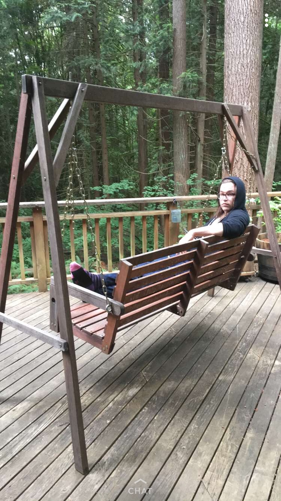

2019 lt-friendsgiving
Table of Contents
seattle
we flew in to seattle from austin at 845 am. don’t take that flight it was fucking horrible but it did give us a full day there despite flying for 4 hours.
sheri’s house
we drove around a bunch, but we started the night at sheri’s. we saw new (baby!) cats and ate good food and had our photo taken by a family friend.

jill’s house
i forgot to take pictures this trip so here’s some from last year:
this is jill’s back porch and it feels fake to me. so many trees it’s stunning. 
we played a lot of mule, an old atari 800 game. it’s a lot of fun; laura hates computer games but since this is just a board game with calculations and tabulations done by a computer she sorta fell in love

food at martha’s
i forgot to take pictures of food. and also forgot to take a lot of other pictures. i did get a funny picture of laura’s family though, it was great: